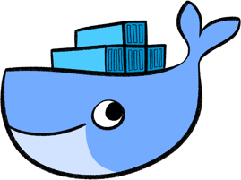

docker-aez-notes

Table of Contents
Docker notes
daemon
To start the docker daemon running in the background issue the following command
sudo systemctl start docker
and to stop it running
sudo systemctl stop docker
If you want it to start on boot (or not) you can toggle this behaviour
with sudo systemctl enable docker and sudo systemctl disable
docker.
Permissions
The docker deamon is owned by root, so by default you will need to run every
command with sudo. Members of the docker group do not need to do this. To
set up the docker group and add yourself as a member there are the following
commands
sudo groupadd docker # create docker group sudo usermod -aG docker $USER # add yourself as a member
At this point you may need to restart your terminal or run newgrp docker to
refresh the group settings. To list the groups you are included in use groups
and to test that this actually worked you can run the hello world example.
docker run hello-world
gibiansky/ihaskell
The developer of IHaskell has a docker image available which provides IHaskell notesbooks
docker pull gibiansky/ihaskell
Jupyter docker stacks
https://jupyter-docker-stacks.readthedocs.io/en/latest/
The jupyter team maintain several docker images which have jupyter notebooks configured for basic datascience with julia, python and R.
For example, the following command will start a Docker container running JupyterLab.
docker run --rm -p 8888:8888 -e JUPYTER_ENABLE_LAB=yes -v "$PWD":/home/jovyan/work jupyter/datascience-notebook:9b06df75e445
When the image has downloaded and the container is running a <TOKEN> should be
printed, you will need this to access the lab via your browser at
127.0.0.1::8888/?token=<TOKEN>. The data in the current working directory will
be made available in this container.
rocker/geospatial
You can pull the following image from docker hub which has a lot of geospatial libraries included in it.
docker pull rocker/geospatial
then you can connect to a bash shell inside that container and bind mount a
volume which is shared between the container and the host machine. This provides
a way to share data between your machine and the docker container. In the
following example a directory, demo-directory will be shared between the host
and the container. By default there is a directory /home/rstudio in the rocker
images.
docker run -v /home/morty/demo-directory:/home/rstudio/demo-directory -it rocker/geospatial bash
Silly little notes
Here are some notes I took while listening to a tutorial on docker:
Docker Tutorial for Beginners - A Full DevOps Course on How to Run Applications in Containers
- Lots of containerised programs available on Docker Hub.
- An image is the template and a container is a running instance of an image. The docker file describes an image.
- There are community and enterprise editions.
- Installation is a bit finky but
docs.docker.comhas detailed instructions to help you with this.- Remove any existing installed versions of docker and friends
- Use the convenience script to install docker correctly.
- Once you have installed docker
docker run docker/whalesay cowsay "hello world"which is the docker version ofcowsaywhich uses a whale docker psto see what docker containers are running, anddocker ps -ato see previously run dockers which may now have been exited.docker stop <container-name>to stop a container.docker rm <container-name>to remove a container.docker imagesto print the available images on the machine.docker rmi <image-name>to remove an imagedocker pull <image-name>to download an image without running a container based off of it.- containers are designed to run a process and after that finishes they exit.
- the
execcommand can be used to run a command in a running container. - a container can be run in detached mode by adding the
-dflag to the run command, it is possible to attach to that container later withattach. docker run <image>:<tag>the tag allows you to specify a particular version of the image to run a container off of.- by default, docker does not connect to the terminal for either input or
output, you need
-itfor it to accept input and to output to the terminal. - to access ports in the docker container, you need to map these across.
- to save container data to files outside of the container you need to use
docker run -v <host/path>:<container/path> <container-name> docker pswill provide a highlevel description of a container, butdocker inspect <container-name>will provide more details.- environment variables are a way to pass information into a docker container
and are set using the
-eflag when the container is run. - creating your image
- list of all the commands that you would want to run to set things up
- write a docker file which has these commands with a
RUNprefix - add
COPYcommands to copy source code into the container - have an
ENTRYPOINTfor actually running the process - build the image by pointing at the dockerfile and giving it a name
- a
Dockerfilehas an<instruction> <argument>format. - the dogma is that everything will be containerised.
- using
CMDyou specify the whole command to run, wither as a single line of text or as a list of strings. If you useENTRYPOINTthen any additional variables todocker run...will be added to the command. - you can use a combination of
CMDandENTRYPOINTto set default variables. - when a container is run a container layer is added to the existing image layers to store the data specific to that process.
- there is volume mounting which mounts volumes from
/var/lib/docker/volumes, for example withdocker run -v my_vol:/var/lib/mysqlbut you can also bind mount which us used to mount an arbitrary directory by giving the full path of that directory. - there is a more verbose
--mountcommand which makes it clearer what is actually going on when you mount a volume. docker run <user>/<image>or if the username and the image name are the same you can just specify it once.- you can limit the resources available to the docker container by using
--cpus=0.5to allow up to half the CPUs and--memory=100mto allow up to 100Mb of memory to be used.
Examples
LaTeX
The following two line dockerfile sets up a way to call pdflatex.
FROM pandoc/latex # optional CTAN packages RUN tlmgr install enumitem RUN tlmgr install mathtools ENTRYPOINT ["./compile.sh"]
And then have a file compile.sh that looks something like the following, make
sure it has the correct permissions.
#!/bin/sh pdflatex stuff.tex pdflatex stuff.tex
To build this image and tag it as aez/foobar use the following command:
docker build -r aez/foobar - < <PATH/TO/DOCKERFILE>
To run the image while sharing the current directory with the container use the following command:
docker run --rm --volume "$(pwd):/data" aez/foobar